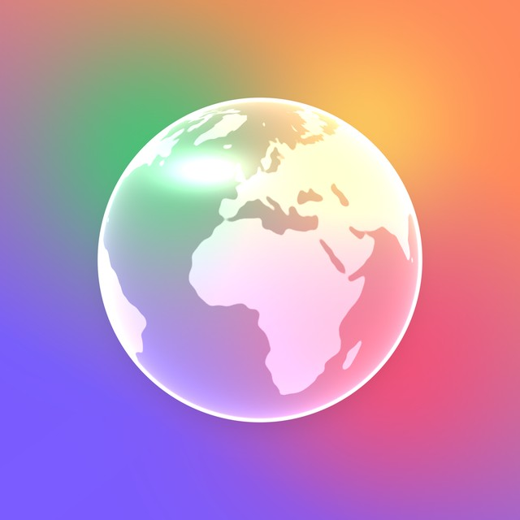
V1Verre
La planète en verre dépoli, posée sur des couleurs qui passent à travers. Moderne, dans l'air d'iOS.
Toujours la planète, toujours sans texte, mais chaque fois dans une matière différente : verre, pâte à modeler, impression, personnage, néon, pixel, chrome, papier, facettes. Chaque icône est montrée en grand, puis à 64, 40 et 22 px. Les pistes précédentes sont sur la première page.

La planète en verre dépoli, posée sur des couleurs qui passent à travers. Moderne, dans l'air d'iOS.
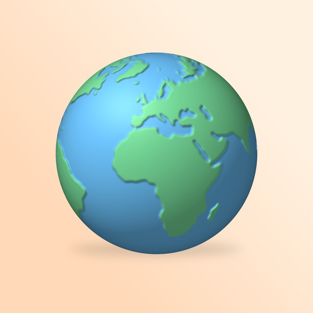
Une Terre douce, en relief, comme un jouet. Chaleureuse, pas intimidante.
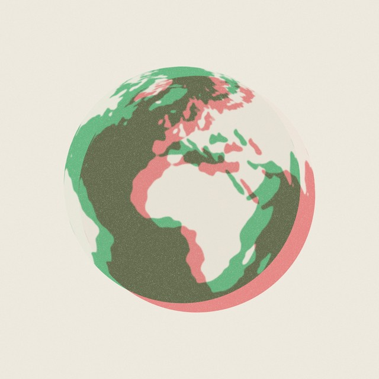
Deux Terres imprimées l'une sur l'autre, verte et rouge, un peu décalées : deux avis sur le même monde.
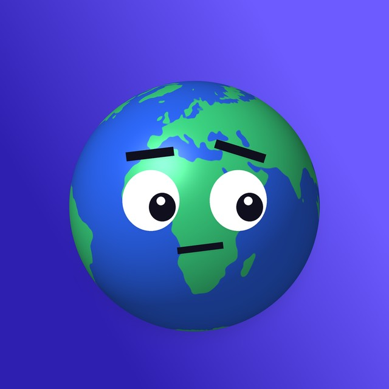
La planète devient un personnage qui te juge d'un sourcil. Une mascotte pour une app d'opinions.
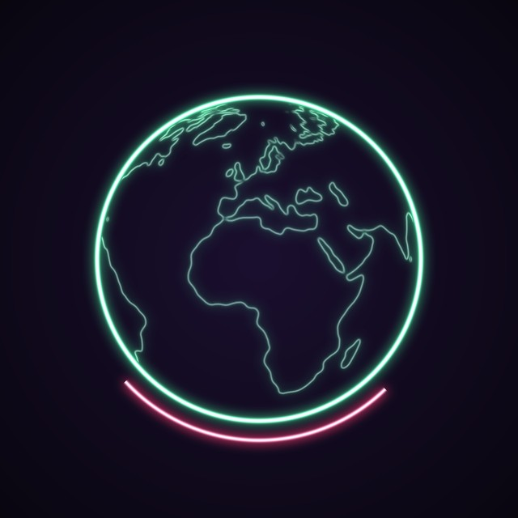
Le contour du monde en néon vert, un arc rouge dessous. Une enseigne qui s'allume la nuit.
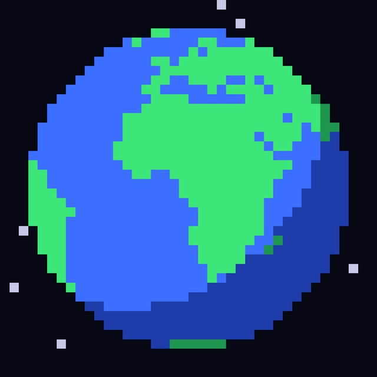
La Terre en pixels, comme dans un jeu vidéo. Ludique, lisible en tout petit.
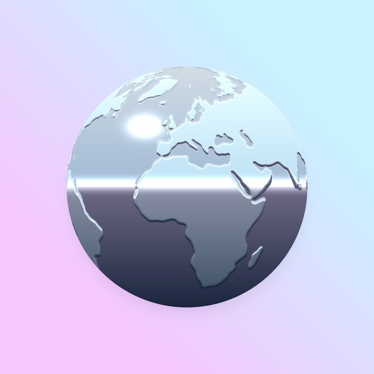
Une Terre en métal poli qui reflète le ciel. Brillante, un peu an 2000.
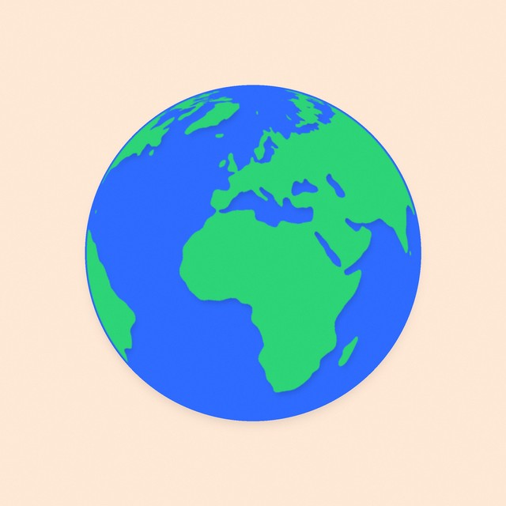
Des continents découpés dans du papier, posés sur un disque bleu. Fait main.
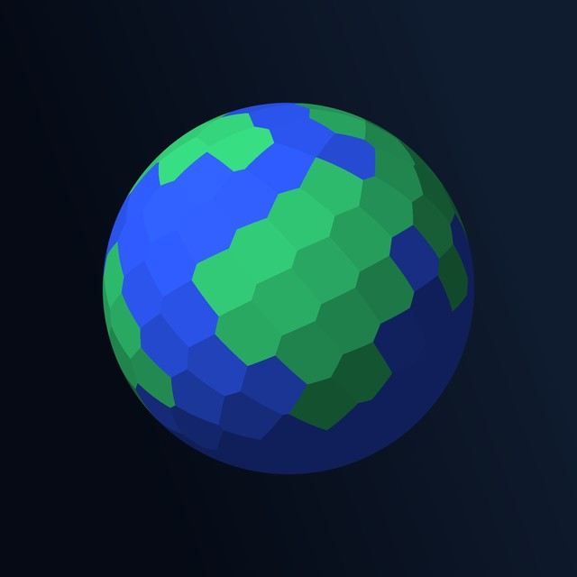
La Terre taillée en facettes, comme un objet 3D stylisé.
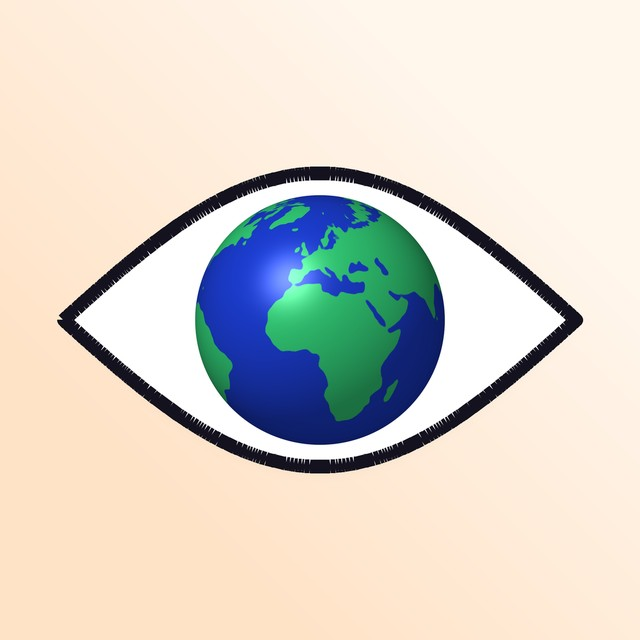
Un œil dont l'iris est la Terre : le monde regarde, et il a un avis.
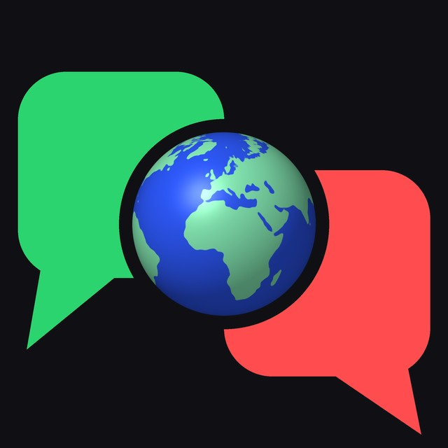
Une bulle verte, une bulle rouge ; au milieu, le monde. Take, c'est la conversation mondiale.
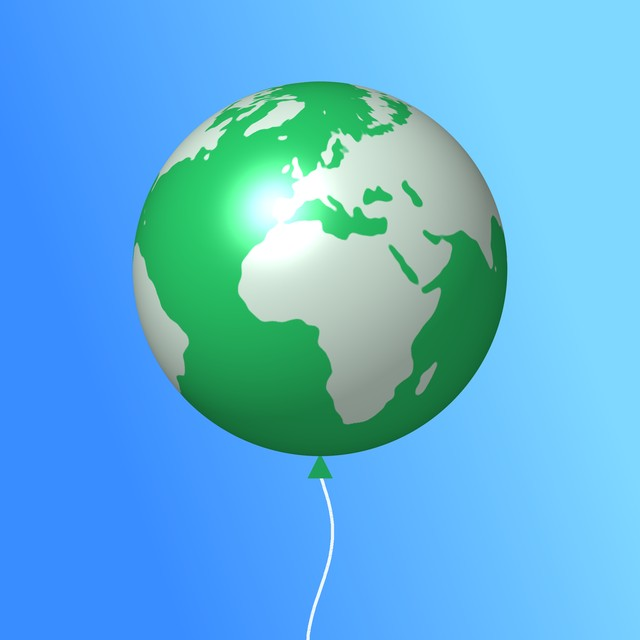
Le monde en ballon qui s'envole. Léger, festif, social.